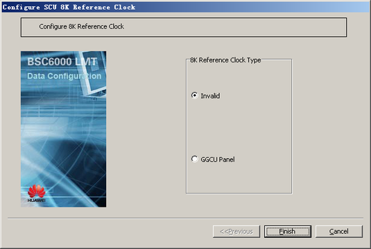

This describes how to configure the 8 kHz clock provided by the GGCU as the 8 kHz reference clock for the GEPS. The 8 kHz reference clock serves as the synchronization clock for the boards in the GEPS.
| Scenario | BSC initial configuration and BSC capacity expansion |
| Mandatory/Optional | Mandatory |
Prerequisites
Preparation
Table 1 Example of the data negotiated and planned for configuring the 8 kHz reference clock for the GEPS
Parameter
|
Example
|
Source
|
8K Reference Clock Type
|
GGCU Backplane
|
BSC internal planning
|
Procedure
- On the BSC6000 Local Maintenance Terminal, right-click the edge of the GEPS.
- Choose from the shortcut menu. A dialog box is displayed, as shown in Figure 1.
Figure 1 Configure GSCU 8K Reference Clock dialog box

- Set the parameters by referring to Table 1.
- Click Finish. The configuration of the 8 kHz reference clock for the GEPS is complete.
- Repeat 1 through 4 to configure the 8 kHz reference clock for multiple GEPSs.
Copyright © Huawei Technologies Co., Ltd.